github
Table of Contents
1 Introducción
Es una plataforma de desarrollo colaborativo, para alojar proyectos utilizando el sistema de control de versiones Git. Todos los códigos se almacenan de forma pública, en caso de que no se desee esto, tambien se pueden subir de forma privada, pero con la diferencia de que se debe subir con una cuenta de pago. Los proyectos que esten almacenados en forma pública pueden recibir contribuciones de terceros para mejorarlos, ya que ellos pueden descargar alguna de las versiones almacenadas (forks), y manipularlas a su antojo; una vez realizadas las modificaciones, el desarrollador las puede enviar al dueño del proyecto (pull), este último tendrá la desición de adjuntar los cambios al proyecto original.
1.1 Beneficios de GitHub
- Permite revertir archivos a un estado anterior.
- Permite revertir el proyecto entero a un estado anterior.
- Comparar cambios realizados a lo largo del proyecto.
- Control total de los cambios (nombre del usuario, fecha, etc.)
- Recuperar cambios en el proyecto
2 Registro
a) Primeramente en la página principal se ingresa en la opcion 'Singnup and Pricing' de la barra de herramientas de la página.

Figure 1: Página principal de GitHub
b) Seguidamente se creará una cuenta gratuita en la opción `Create a free account´, en caso de querer repositorios unicamente accesibles para los miembros de el proyecto, se seleccionará una cuenta de pago.
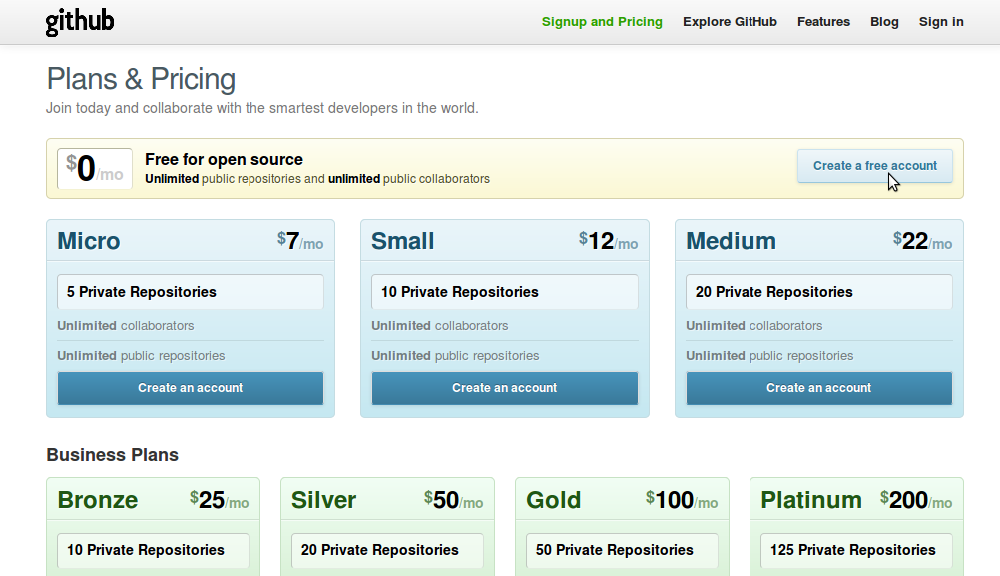
Figure 2: Creación de cuenta nueva en GitHub
c) Por último sólo se tendrá que llenar un formulario con los datos del lider del proyecto:
- Nombre de usuario
- Correo electrónico
- Contraseña
- Confirmación de la contraseña
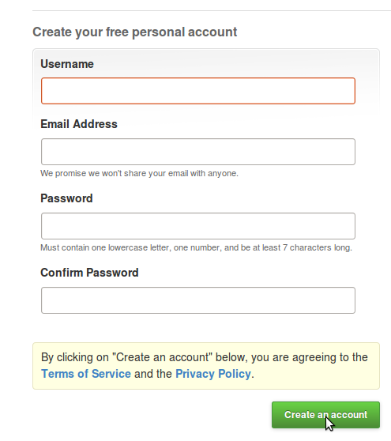
3 Crear un repositorio
Primeramente como requisito para crear un repositorio de algún proyecto, es necesario haber accedido ya al sitio web con algún usuario, posteriormente solo hay que seleccionar el botón "New repository", el cual se encuentra en el lado inferior derecho de la página principal.
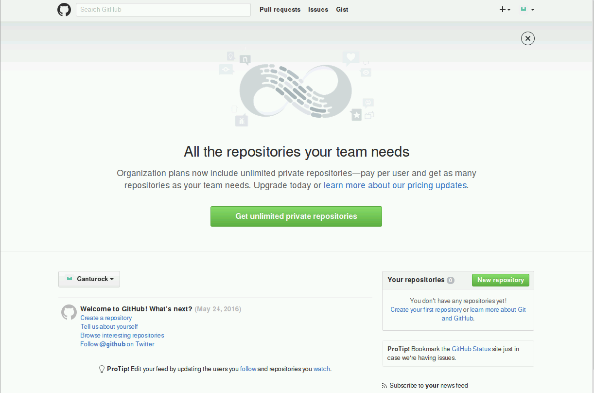
Figure 4: Opción para crear un nuevo repositorio
Inmediatamente se redireccionara a una página, en donde se deberá llenar un formulario con el nombre del repositorio y una descripción del mismo (opcional). En caso de ser una cuenta de pago, se podrá escoger sí el repositorio será privado o público, por otro lado sí la cuenta es gratuita, el repositorio solo podrá ser público.
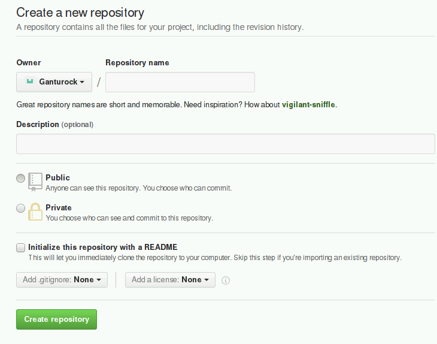
Figure 5: Formulario para la creación de un repositorio
Una vez creado un repositorio, este estará vacio, por lo que se tiene que crear los archivos que tendra el proyecto, pero antes de todo eso se debe instalar el git y conectarse a este mediante el protocolo ssh:
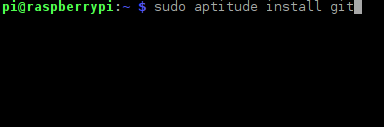
Figure 6: Instalación de git en consola
4 Conectarse a GitHub
Para conectarse a git es necesario que este nos reconozca, para ello se accederá a la configuración del git y se ingresará el nombre de usuario (figura 7) y el correo electrónico (figura 8), es importate que estos dos coincidan con el usuario registrado en la página de GitHub.
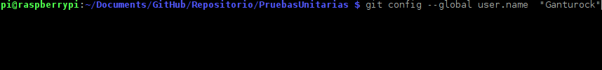
Figure 7: Configuración del nombre de usuario en git
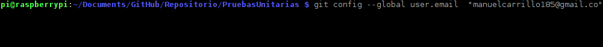
Figure 8: Configuración del correo electrónico en git
4.1 Conectarse por SSH
En caso de querer enviar los archivos por ssh, se debe ingresar una llave ssh para conectar la PC al servidor de git, para lograr eso se genera la llave ssh con el comando "ssh-keygen".
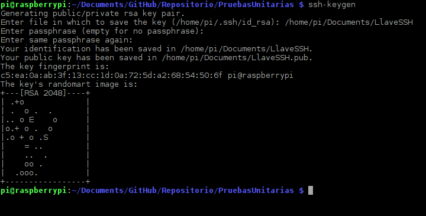
Figure 9: Generar llave ssh
nota: Conectarse mediante llaves SSH no es muy recomendable para proyectos que impliquen varios integrantes, se recomienda conectarse mediante la URL del proyecto.
Una vez ingresado el comando, este pedirá una dirección para guardar la llave ssh, en caso de no ingresar ninguna dirección, la llave de guardará automaticamente en la carpeta señalada; tambien requerirá de ingresar una clave de seguridad para la llave y confirmarla, en caso de que no se desee ninguna se tecleará enter sin escribir nada. Esta llave debe ingresarse en la página de GitHub para que su servidor se conecte a la PC, usando el comando "cat" a la llave creada.
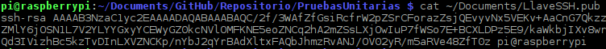
Figure 10: Consultar llave ssh
Ahora se deberá copiar toda la llave y pegarla en la configuración de GitHub. Para eso se ingresa a la página del perfil del usuario y elegir la opción "Edit profile".
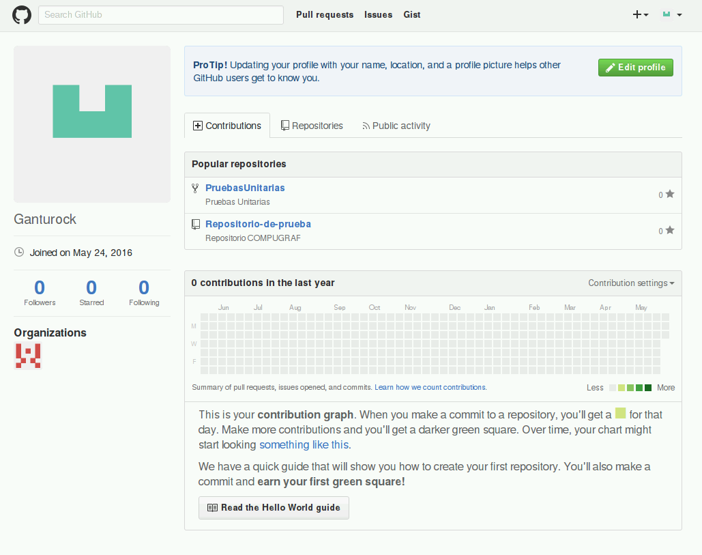
Figure 11: Editar perfil del usuario git
Posteriormente se elige la opción "SSH and GPG keys" - "New SSH", se le asigna un titulo a la llave ssh y en la opción "key" se pega la llave anteriormente consultada.
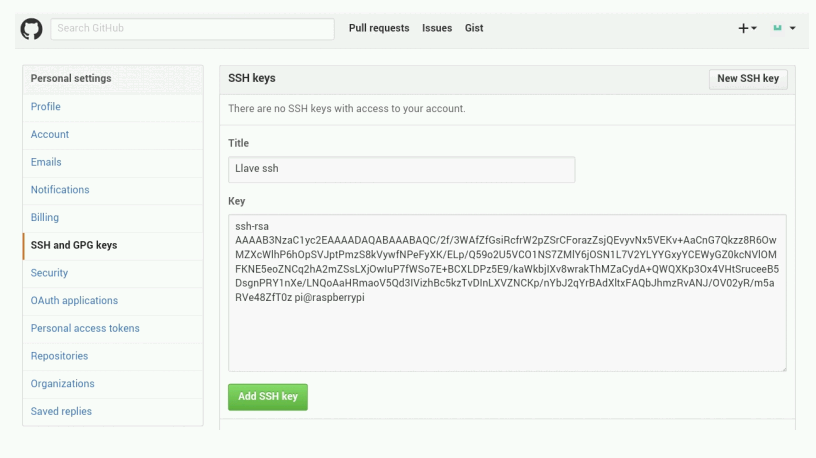
Figure 12: Ingresar llave ssh
4.2 Conectarse remotamente mediante la URL
El conectarse mediante la URL donde se encuentre alojado el proyecto suele ser el método más usado, aunque un poco menos inseguro comparado con el método de llaves ssh. Para esto se debe añadir la URL del proyecto a la lista de repositorios remotos git y asignarle un nombre para identificar el repositorio remoto, entonces la estructura seria: $: git remote add [Nombre del repositorio remoto] [URL del proyecto].
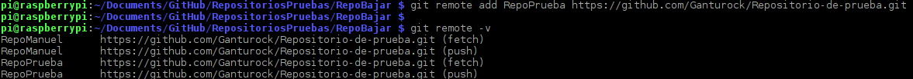
Figure 13: Ingresar URL del repositorio remoto
Para confirmar que se ha añadido con exito la URL del proyecto a la lista de repositorios remotos de git se consulta la lista con el comando $: git remote -v
Sí por alguna reazón se desea renombrar el nombre con el que se identifica el repositorio remoto, se ingresa el comando $: git remote rename [nombre actual del repositorio remoto] [Nuevo nombre del repositorio remoto], y para eliminar alguno de la lista de repositorios remotos seria $: git remote rm [nombre del repositorio remoto]
5 Subir repositorios
Antes de hacer alguna cosa en Git, es necesario tener un repositorio creado, pues de otra forma Git no tendría forma de almecenar el código que se subirá a un repositorio, al igual que no podría identificar los cambios realizados en el código del proyecto. Para crear esta carpeta se debe estar localizado en la carpeta donde se encuentran los repositorios y escribir el comando $: git init.
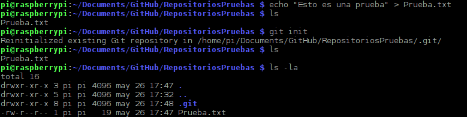
Figure 14: Comando git init
En seguida se puede notar que hay una carpeta oculta llamada .git, en la cual se almacenan todos los cambios del proyecto. Lo próximo a hacer es ingresar los cambios al stangig area (área de comprobación o de ensayo), en esta área se encuentran los archivos próximos a enviar como repositorio en el próximo envío; para ingresar estos cambios se ingresa $: git add [Nombre del archivo], en caso de querer agregar recursivamente todos los archivos que se encuentran en una carpeta se ingresa el comando $: git add .
En cualquier momento se puede consultar el estado de los archivos en el directorio de trabajo y en el staging area con el comando $: git status -s
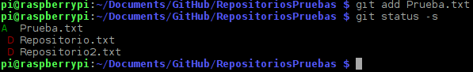
Figure 15: Comando git status y git add
En este ejemplo se puede observar el estado de tres archivos, el primer archivo el cual tiene una letra "A" al inicio indica que a sido añadido y permanece en el staging area, por el contrario los otros dos archivos han sido borrados del area (delete); hay otros casos en donde el estado se identifica con las iniciales "AM" las cuales indican que se añadio el archivo pero se modifico en el disco local desde que se agrego. Una vez agregados todos los archivos en el staging area se tendrán que confirmar los cambios con el comando $: git commit -m "[comentarios]"/, se usa la opción /-m para agregar un mensaje al mismo tiempo que se realizan los cambios, sí no se elige la opción -m, git automaticamente abrira un editor de texto para ingresar el mensaje:
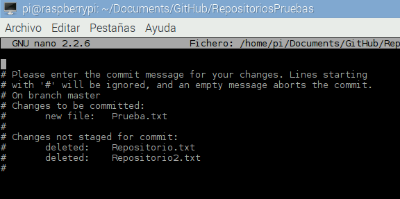
Figure 16: Comando git commit
En caso de que se desee deshacer el último cambio de confirmación en el commit y sacar del staging area algunos archivos (archivos a los que se les hizo un git add), se deberá usar el comando /$: git reset HEAD –[nombre del archivo], ejemplo:
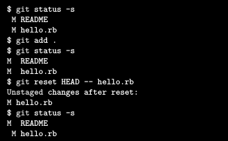
Figure 17: Comando git reset HEAD
Con git reset lo que en realidad se hace es resetear las entragas del archivo en el index, para que sean iguales a las del commit anterior